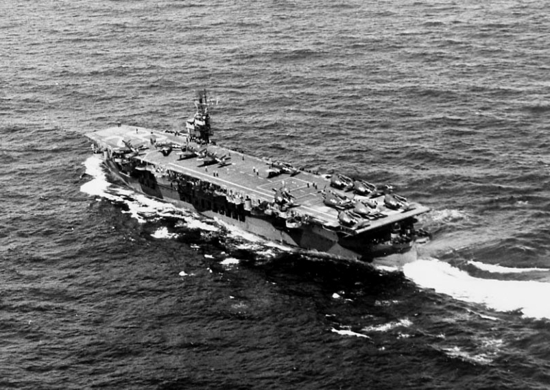
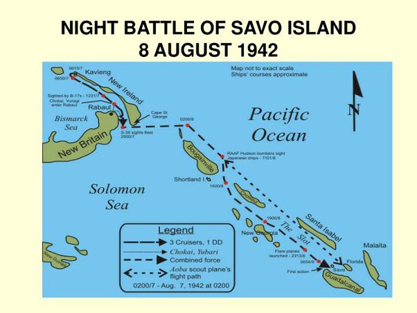
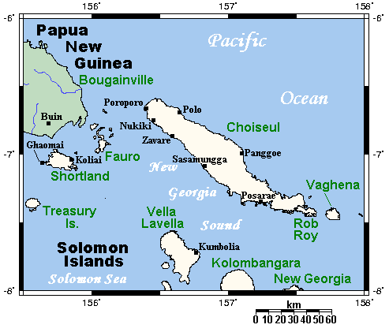
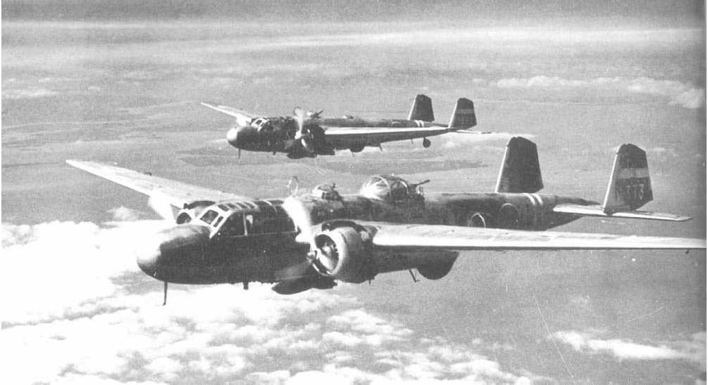
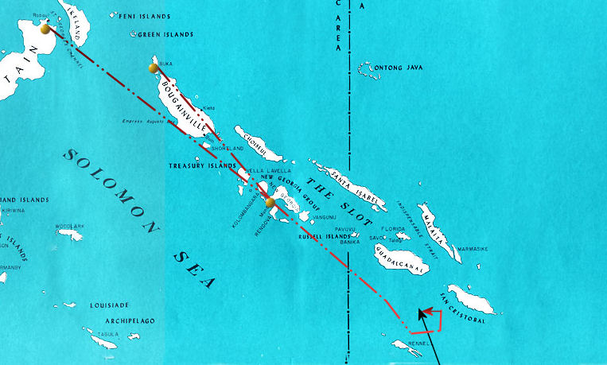
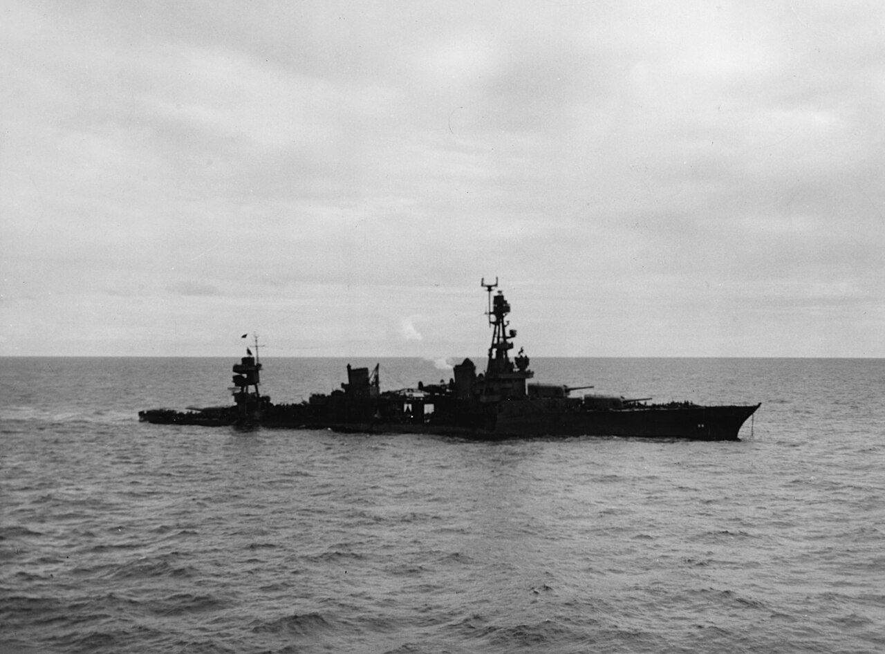
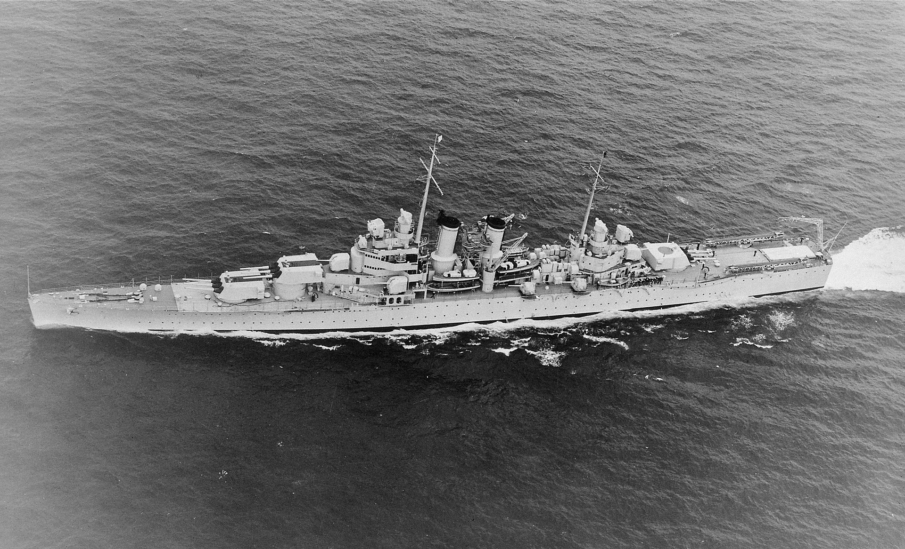
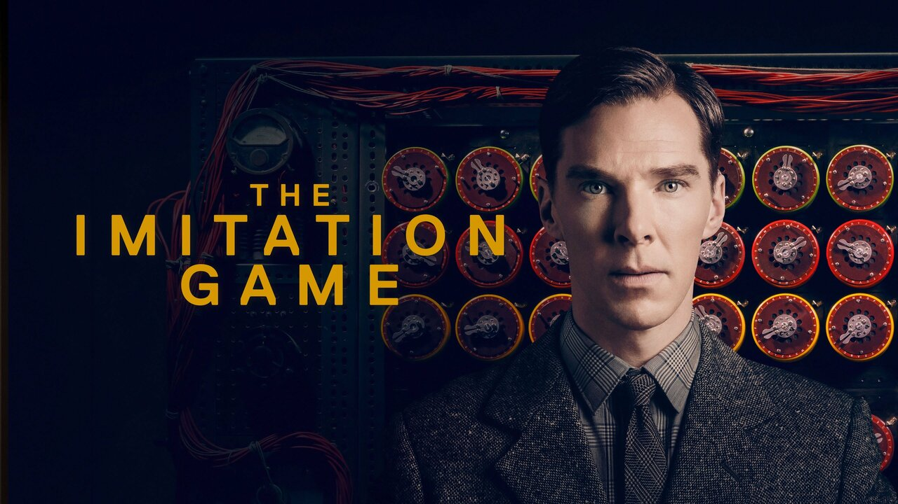

무선 침묵 이야기 (2) - USS Chicago의 격침
게시: 2024-08-01T06:30:34+09:00
<서쪽 하늘의 마지막 햇빛> 1943년 1월 말, 일본군은 과달카날 일대에서 완전히 철수할 것을 결정하고 굶주린 잔존 병력 1만을 몰래 빼내는 케(ケ)호작전을 준비함. 일본군이 뭔가 작전을 꾸미고 있다는 것을 미해군도 눈치 채기는 했는데, 미해군은 실제와는 정반대로 일본군이 지상군 증원병력을 투입하려 한다고 판단. 결국 할시 제독은 정규항모 2척을 포함한 항모전단을 투입하기로 하고, 먼저 6척의 순양함과 2척의 호위항모, 기타 구축함들로 구성된 Robert C. Giffen 소장의 제18 기동부대를 앞세워 남쪽에서부터 솔로몬해로 진입을 시도.

(지펜 소장의 제18 기동부대에 소속되어 있던 2척의 호위항모 중 하나인 USS Chenango (CVE-28, 1만2천톤, 18노트). 원래 1941년 미해군 유조선 AO-31으로 매입된 민간 유조선이었는데 1942년 3월 호위항모로 개조됨. 개조에 걸린 시간은 약 6개월.) 원래 제18 기동부대는 툴라기(Tulagi) 섬에서 출발하는 구축함 4척과의 랑데부하여 'the Slot'이라고 불리던 New Georgia Sound (뉴조지아 해협)의 좁은 바다를 탐색하게 되어 있었음. 그러나 약속 시간인 1월 29일 21시까지 약속 장소에 가기에는 호위항모 2척의 속도가 너무 느렸으므로, 지펜 소장은 호위항모들에게 구축함 호위 3척을 붙여주고는 뒤에 내버려두고 순양함과 구축함들만 챙겨서 목적지로 향함.

(이 지도는 과달카날 전투가 한창이던 1942년 8월 벌어진 Savo 섬 해전 상황을 보여주는 것인데, 섬들로 둘러싸인 좁은 해역이 'The Slot'으로 표시된 것이 보임. 거기가 바로 New Georgia Sound.)

(Sound라는 단어는 '소리'라는 뜻이 아니라 고대 독일어인가 네덜란드어인가에서 유래된 좁은 바다를 뜻하는 단어라고. 앵글로색슨이 원래 해양민족이라 항행에 관련된 단어는 무척 세밀하게 많고 또 스페인어나 네덜란드어 등 외국어의 영향을 받은 것들이 많음.) 지펜 소장은 그 해역에 일본해군 잠수함들이 있을 거라는 경고를 받았으므로, 6척의 구축함들을 반원형으로 앞세우고 그 뒤에 순양함들을 2줄로 세워 지그재그로 항진. 이들은 USS Enterprise에서 발진한 함재기들의 CAP (Combat Air Patrol) 보호를 받고 있었음. 그런데 1월 29일 저녁이 되어 해가 질 때가 되자 이 함재기들은 서둘러 모함으로 되돌아 감. 어차피 야간에는 일본해군 항공기들도 미해군 함재기들도 모두 까막눈이 되어 서로 할 수 있는 것이 없었기 때문. 다만 깜깜한 바다에서 모함을 찾고 또 그 좁은 비행갑판에 착함하는 것은 함재기 조종사들에게도 매우 어렵고 위험한 일이었으므로 이들은 아직 햇빛이 조금 남아 있을 때 서둘러 돌아감. 그런데 그 해역에는 정말 일본해군 잠수함이 있었음. 몇 시간 전 제18 기동부대를 포착한 이 잠수함은 위치가 안 맞았는지 이들을 공격하지 못하고 대신 이들이 지나간 뒤에 부상하여 라바울의 일본군 기지에 이들의 포착 사실을 무전으로 보고. 라바울의 일본해군은 제18 기동부대를 뇌격기로 공격하기로 결정. 그리고 그 작전계획이 기가 막혔음. 일본해군도 저녁 무렵이면 미해군 함재기들이 모함으로 돌아갈 것이라고 확신. 그런데 이들이 어둠속 착함을 피하기 위해 해지기 전에 빨리 돌아간다는 사실에 착안, 라바울에서 출발하는 뇌격기들이 햇빛이 서쪽 하늘에서 막 사라질 순간에 미해군 함대를 덮치기로 함. 참고로 뉴 조지아 일대에서 1월에는 일몰 시간이 18시 40분 정도. 라바울에서는 딱 19시 10분 정도, 아직 서쪽 바다에 석양이 좀 남아 있을 때 현장에 도착하도록 시간을 조절하여 미쯔비시 G4M 'Nell' 폭격기 16대와 미쯔비시 G3M 'Betty' 폭격기 16대에 어뢰를 실어 날려 보냄.

(일본해군의 미쯔비시 G3M 'Nell' 폭격기. 수평폭격과 함께 뇌격 용도로도 사용됨.)
이들은 순조롭게 제 시간에 현장에 도착. 이들이 현장에 도착해보니 자신들의 동쪽에서 제18 기동부대를 발견. 이들은 서두르지 않고 이들을 빙 우회하여 자신들이 동쪽의 캄캄한 하늘을 등지도록 한 뒤, 아직 희미한 저녁놀을 배경으로 보이는 미해군 순양함들을 어뢰로 공격. 2차례에 걸친 이 뇌격에서 순양함 USS Chicago (CA-29, 1만1천톤, 32.7노트)이 어뢰 2발을 맞고 동력을 상실. 하루 뒤에 나중에 다시 공격을 받고 결국 격침됨.

(일본해군 쌍발 뇌격기들의 공격 항로. 남쪽에서 The slot을 향해 북진하는 미해군 함대를 동쪽에서 공격하기 위해 우회하는 모습이 표시됨.)

(1943년 1월 30일 오전, 어뢰에 피격된 채 부분 침수된 USS Chicago의 모습) 결국 지펜 소장의 제18 기동부대는 뉴 조지아 해협으로 진입하지 못하고 그대로 회항. 이것이 렌넬 섬(Rennel Island) 해전. 이렇게 미해군 수상함 전력들이 뒤로 물러나자 그 틈을 타서 결국 일본해군은 과달카날에서 생존 병력 약 1만을 무사히 빼냄. 어떻게 보면 그런 패전은 병가지상사로서 그냥 있을 수 있는 일이었지만 할시 제독은 크게 분노하여 지펜 소장을 비난. 할시 제독은 지펜 소장 뿐만 아니라 미해군의 무전기에 대해서도 크게 불만을 표시. 대체 왜 그랬을까? <지펜은 대체 왜 그랬을까?> 미해군 수뇌부에서 지펜 소장의 지휘에 대해 매우 부적절하다고 본 부분은 바로 무선 침묵 (radio silence). 실은 지펜 소장의 제18 기동부대에 들어있던 순양함 USS Wichita (1만3천톤, 33노트)에서는 자신들을 향해 날아오던 일본 폭격기들을 레이더로 멀리서부터 포착하고 있었음. 심지어 자신들을 동쪽에서 공격하기 위해 남쪽으로 빙 우회하는 것도 다 보고 있었음.

(현장에 같이 있었던 USS Wichita. 이 Rennel Island 해전에서 위치타도 시카고와 함께 어뢰 한 방을 얻어맞았으나 다행히 불발탄. 이 사진은 WW21 발발 전의 모습이라 radar가 설치되어 있지 않은 모습을 보여줌.) 당연히 위치타에 타고 있던 관제사는 그 정체불명의 항공기들, 즉 bogey들을 요격하기 위해 CAP (Combat Air Patrol) 전투기들을 부르기를 원했음. 하지만 당시 제18 기동부대는 지펜 소장의 명령하에 엄격한 무선 침묵을 준수 중. 해가 지고 있었으므로 이미 모함인 엔테프라이즈로 되돌아가고 있던 CAP을 다시 불러 그 bogey들이 날아오는 방향으로 유도하려면 무선 침묵을 깨야 했는데, 그러자면 함대 지휘관인 지펜 소장의 허가가 필요. 무선 침묵을 깨고 CAP을 유도하겠다는 전투기 관제사(FDO)의 요청을 받은 지펜 소장은 잠시 고민하다 그 요청을 불허. 그것이 결국 렌넬섬 해전의 패배와 순양함 시카고의 상실로 이어졌다고 할시 제독은 판단한 것. 지펜 소장도 무선 침묵 깨는 것을 불허한 이유가 있었을 것. 설령 그 bogey들이 일본기들이라고 하더라도 곧 해가 질 텐데 어차피 걔들도 어둠 속에서 자신들을 못 찾을 것이며, 혹시나 CAP을 유도한다고 하더라도 어둠 속에서 미해군 전투기들도 그 일본기들을 찾지 못할 것이라고 아마 생각했을 것 같음. 일본군이 그렇게 최후의 석양빛을 활용하기 딱 좋게 시간을 잘 맞춰 공격할지 어떻게 예상했겠나? 일본해군은 무선 침묵을 너무 지나치게 중시하는 경향이 있었지만, 미해군도 무선 침묵은 매우 중요시했는데, 거기엔 다 이유가 있었음. 육군이든 해군이든 무선 침묵을 하는 이유의 제1 이유는 무선은 누구나 들을 수 있기 때문에 적에게 감청 당하지 않기 위한 것. 각국은 나름대로의 암호 코드를 만들어 암호로 송수신을 했지만 그걸 또 해독해낼 수도 있음. 대표적인 것이 WW2 기간 중 U-boat들과 독일 해군 본부와 교신. 독일 해군은 U-boat들과의 교신을 언제나 Enigma라는 암호 체계를 이용하여 수행했지만, Bletchley Park로 대표되는 영국 암호 전문기관이 결국 해독에 성공하여 역이용.

(이니그마 해독 이야기는 영화 The Imitation Game에 극적으로 나와 있으니 그 영화 보세요. 물론 실제 해독 과정은 영화와는 많이 다르지만 아무튼 재미있습니다.) 하지만 제2 이유도 그런 감청 못지 않게 중요했는데, 지펜 소장이 CAP을 부르자는 전투기 관제사의 요청을 거부한 것도 바로 그 이유. 그것은 바로... (다음 주에 이어짐)